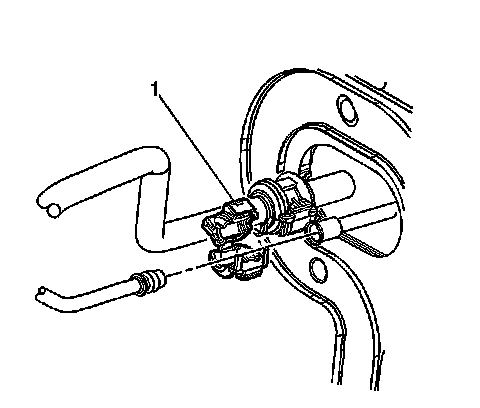
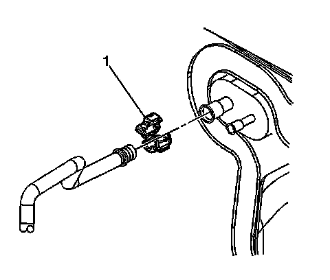
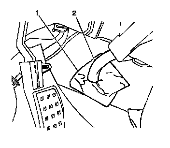
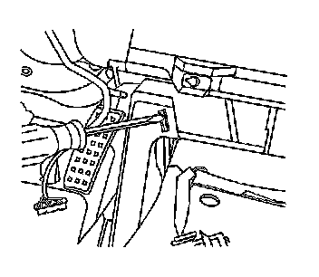
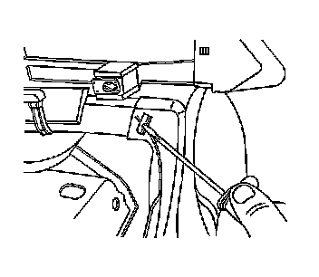
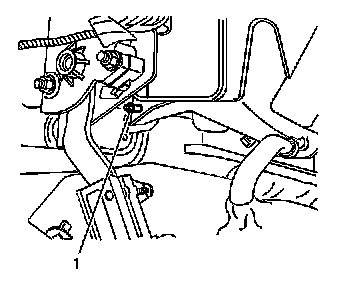
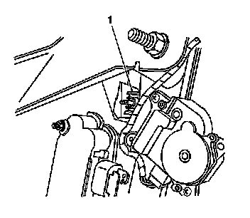
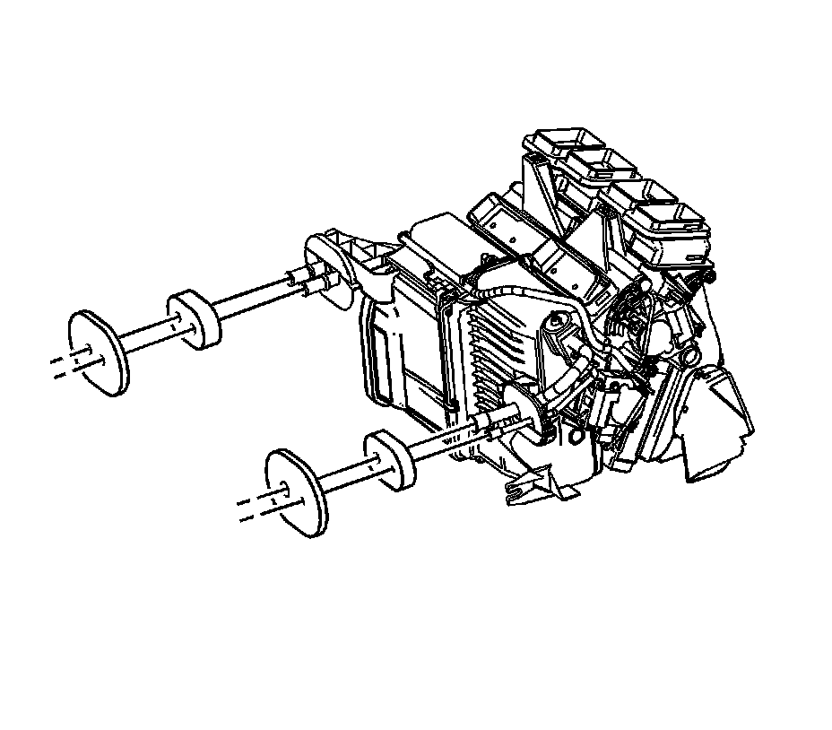

HVAC Module Assembly Replacement (Left Hand Drive)
HVAC Module Assembly Replacement (Left Hand Drive)
Tools Required
* J 39400-A Halogen Leak Detector
* J 45689 A/C Quick Joint Tool
Removal Procedure
1. Recover the refrigerant. Refer to Refrigerant Recovery and Recharging (Refrigerant Recovery and Recharging) .
2. Disconnect the negative battery cable. Refer to Battery Negative Cable Disconnection and Connection (LHD) (Service and Repair)Battery Negative Cable Disconnection and Connection (RHD) (Service and Repair) .
3. Drain the coolant. Refer to Cooling System Draining and Filling (GE 47716 -Vac N Fill Coolant Refill Tool) (Service and Repair)Cooling System Draining and Filling (Static Fill) (Service and Repair) .
4. Disconnect the inlet heater hose from the heater core. Refer to Heater Inlet Hose Replacement (LY7 - Gas, 6 Cylinder, 3.6L, SFI, V6) () .
5. Disconnect the outlet heater hose from the heater core. Refer to Heater Outlet Hose Replacement (LY7 - Gas, 6 Cylinder, 3.6L, SFI, V6) () .
6. Remove the quick connect fitting (1) from the liquid line. Refer to Air Conditioning Line/Tube Connector Removal/Replacement (Air Conditioning Line/Tube Connector Removal/Replacement) .

7. Disconnect the A/C liquid line from the evaporator .
8. Remove and discard the O-rings.
9. Remove the quick connect fitting (1) from the suction line. Refer to Air Conditioning Line/Tube Connector Removal/Replacement (Air Conditioning Line/Tube Connector Removal/Replacement) .

10. Disconnect the A/C suction line from the evaporator.
11. Remove and discard the O-rings.

12. Remove the instrument panel (I/P) carrier. Refer to Instrument Panel Carrier Replacement (Left Hand Drive) (Service and Repair)Instrument Panel Carrier Replacement (Right Hand Drive) (Service and Repair) .
13. Remove the air inlet assembly.
14. Disconnect the HVAC module electrical connector.
15. Disconnect the HVAC module drain tube (2) from the floor.

16. Press the tab and release the left rear duct from the HVAC module.
17. Position the left rear heater duct away from the HVAC module.

18. Press the tab and release the right rear duct from the HVAC module.
19. Position the right rear heater duct away from the HVAC module.

20. Remove the lower left HVAC module mounting nut (1).

21. Remove the upper left HVAC module mounting nut (1).
22. Remove the HVAC module from the vehicle.

23. Remove the foam seals from the A/C evaporator lines.
24. Remove the foam seals from the heater core pipes.
Installation Procedure
1. Install new foam seals onto the heater core pipes.
2. Install new foam seals onto the A/C evaporator lines.
3. Install the HVAC module into the vehicle.
Notice: Refer to Fastener Notice (Fastener Notice) .
4. Install the upper left HVAC module mounting nut (1).
Tighten the nut to 9 N.m (80 lb in).
5. Install the lower left HVAC module mounting nut (1).
Tighten the nut to 9 N.m (80 lb in).
6. Connect the rear heater ducts to the HVAC module.
7. Connect the drain tube to the bottom of the HVAC module.
8. Connect the drain tube (2) to the floor.
9. Connect the HVAC electrical connector.
10. Install the air inlet assembly.
11. Install the I/P carrier. Refer to Instrument Panel Carrier Replacement (Left Hand Drive) (Service and Repair)Instrument Panel Carrier Replacement (Right Hand Drive) (Service and Repair) .
12. Install new O-rings to the suction line. Refer to O-Ring Replacement (Service and Repair) .
13. Install the A/C suction line to the evaporator.
14. Install the quick connect fitting (1) to the suction line. Refer to Air Conditioning Line/Tube Connector Removal/Replacement (Air Conditioning Line/Tube Connector Removal/Replacement) .
15. Install new O-rings to the suction line. Refer to O-Ring Replacement (Service and Repair) .
16. Install the A/C liquid line to the evaporator .
17. Install the quick connect fitting (1) to the liquid line. Refer to Air Conditioning Line/Tube Connector Removal/Replacement (Air Conditioning Line/Tube Connector Removal/Replacement) .
18. Connect the inlet heater hose to the heater core. Refer to Heater Inlet Hose Replacement (LY7 - Gas, 6 Cylinder, 3.6L, SFI, V6) () .
19. Connect the outlet heater hose to the heater core. Refer to Heater Outlet Hose Replacement (LY7 - Gas, 6 Cylinder, 3.6L, SFI, V6) () .
20. Connect the negative battery cable. Refer to Battery Negative Cable Disconnection and Connection (LHD) (Service and Repair)Battery Negative Cable Disconnection and Connection (RHD) (Service and Repair) .
21. Fill the coolant. Refer to Cooling System Draining and Filling (GE 47716 -Vac N Fill Coolant Refill Tool) (Service and Repair)Cooling System Draining and Filling (Static Fill) (Service and Repair) .
22. Evacuate and recharge the A/C system. Refer to Refrigerant Recovery and Recharging (Refrigerant Recovery and Recharging) .
23. Leak test the fittings of the component using J 39400-A .